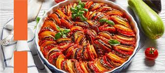

Receita de ratatouille
Escolher outros pratos

ingredientes
- 2 abobrinhas
- 2 berinjelas
- 2 cebolas
- 3 tomates
- 1 pimentão verde
- 1 pimentão amarelo
- 1 pimentão vermelho
- azeite a gosto
- alecrim a gosto
- manjericão a gosto
- alho a gosto
- sal a gosto
- louro a gosto
- molho de tomate para cobrir o fundo da forma
modo de preparo
- Corte os vegetais em rodelas finas sem as sementes.
- Cubra o fundo de uma forma com o molho de tomate.
- Monte tudo intercalando com os vegetais.
- Amasse o alho e espalhe por cima acrescentando o sal e o alecrim a gosto.
- Regue com um pouco de azeite e cubra com papel-manteiga ou alumínio.
- Leve ao forno por 40 minutos a uma temperatura de 180° C a 200° C.